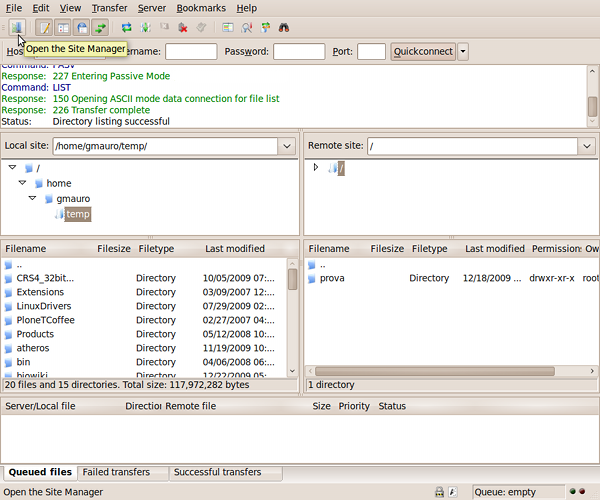
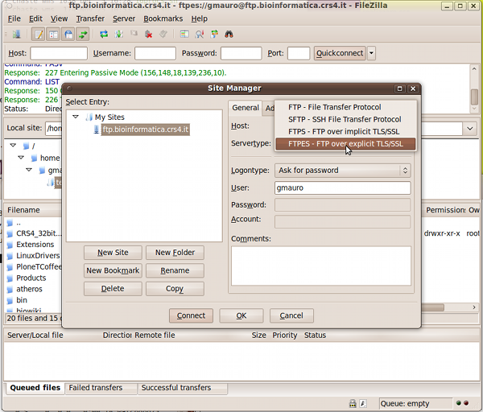
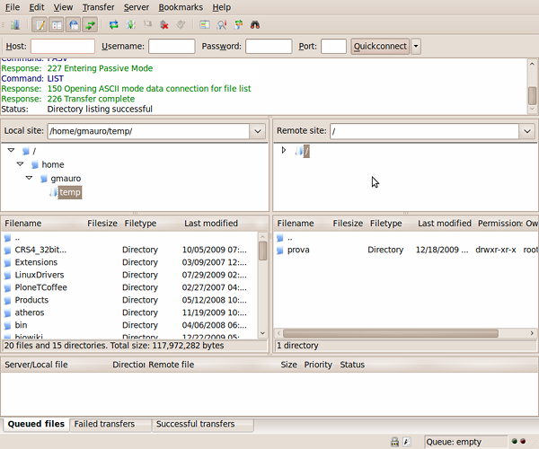

You can access the server using a gui client such as
FileZilla available for Windows, Mac and Linux.
In FileZilla, open the Site Manager:

Create a new site with the "New Site" button, give it a name, and insert ftp.bioinformatica.crs4.it as Host.
If you are using an old version of FileZilla and you see a Server Type field, choose "FTPES".
Otherwise, choose "FTP" as Protocol, and "Require explicit FTP over TLS" as Encryption.
Moreover, choose "Normal" as Logon Type, and insert the User and Password you received from the FTP administrator.

If everything went well, you should now be logged in on the server:
